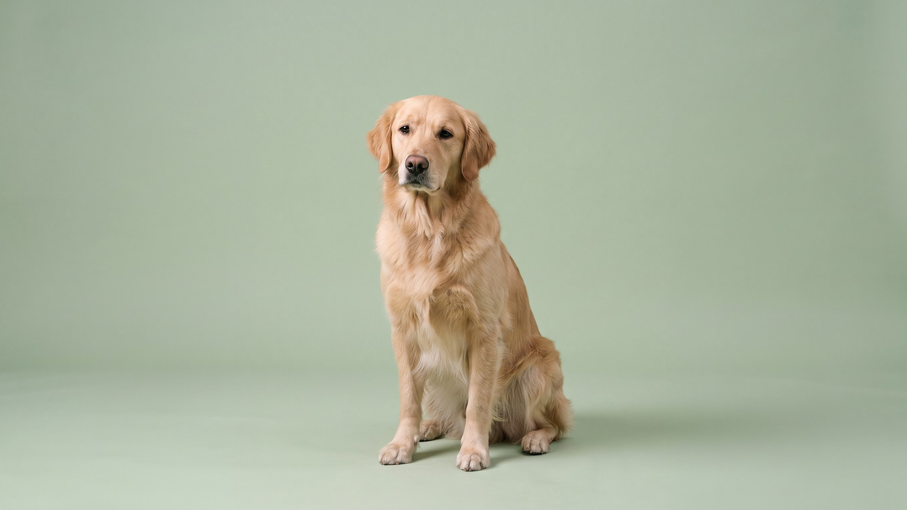

Поездка в метро, прием у ветеринара, осенний рынок с толпой. В этих ситуациях намордник нужен даже самой спокойной собаке, а закон в ряде регионов требует его в транспорте без исключений. Собаки без привычки носить его давятся и паникуют. Собаки, которых приучили постепенно, надевают намордник спокойно за 10 секунд. Ниже: как выбрать нужный тип, снять мерки и пройти семидневное приучение дома.
🐾 Заведите дневник ухода за собакой
Вес, шерсть, обработки, прививки — всё в одном месте. А если что-то смущает, AI-ветеринар ответит круглосуточно и бесплатно.
Завести дневник → Завести в MAX →
У вас iPhone? AnimaLife есть в App Store
Есть два основных типа, и у каждого своя задача.
Корзинчатый (пластик, металл, биотан) подходит для прогулок, транспорта и ветеринарного приема. Собака в нём дышит полной грудью, может пить воду, брать лакомство сквозь прутья. Это единственный тип, который можно носить дольше 10 минут без вреда для здоровья.
Тканевый глухой намордник плотно прижимает пасть. Собака в нём не дышит нормально при нагрузке, не пьёт и не берёт лакомство. Его ставят только на короткую фиксацию: осмотр у врача на 1–2 минуты. На прогулках такой намордник опасен.
Если нужен намордник для прогулок, транспорта или просто на всякий случай, берите корзину.
Понадобятся мягкая портновская лента и помощник, который угостит собаку лакомством, пока вы замеряете.
Запишите три числа и сверьтесь с таблицей размеров конкретной марки. Таблицы различаются у разных производителей, одна и та же собака в одном бренде М, в другом L.
Принцип один: намордник сначала пахнет едой и приносит лакомство, а не ограничение. Каждый шаг повторяйте 2–3 раза в день по 2–3 минуты.
День 1–2. Положите намордник на пол рядом с миской. Пусть собака нюхает и не реагирует тревогой.
День 3. Намажьте внутри намордника что-то вкусное (паштет, арахисовая паста без ксилита). Держите намордник в руках, собака суёт морду сама, чтобы добраться до лакомства. Не застёгивайте.
День 4–5. Собака уверенно тянется мордой в намордник. Застегните на 2–3 секунды, дайте лакомство сквозь прутья, сразу снимите. Хвалите голосом.
День 6. Увеличьте время до 1–2 минут. Во время ношения гуляйте по квартире, нюхайте вместе что-то интересное, играйте. Намордник должен совпадать с хорошим.
День 7. Первый выход на улицу в наморднике. Короткий, 10–15 минут. После снятия сразу дайте угощение.
Первая: надеть намордник впервые прямо на улице или в клинике. Собака получает сразу и новый предмет, и стресс от места. Всегда сначала дома в спокойной обстановке.
Вторая: оставить собаку в тканевом наморднике на 20–30 минут. При любой нагрузке это перегрев и паника.
Третья: торопить приучение. Если собака трётся мордой о пол или лапой снимает намордник, откатитесь на шаг назад и добавьте ещё день.
Намордник сам по себе не повод для визита, но есть ситуации, когда врач нужен раньше, чем вы успеете приучить.
Поведенческие проблемы с агрессией, если собака кусает людей, решает ветеринарный специалист по поведению, а не подбор намордника.
🐾 Чтобы уход не держать в голове
AnimaLife напомнит, когда стричь когти, вычёсывать, купать и обрабатывать от паразитов, и заведёт дневник по вашему питомцу. Бесплатно.
Настроить напоминания → Настроить в MAX →
У вас iPhone? AnimaLife есть в App Store
🐾 Понравился разбор?
Подпишитесь на канал — каждый день разбираем по одному тревожному симптому у кошек и собак: что в пределах нормы, а когда пора к врачу. Подпишитесь, чтобы не пропустить разбор, который может спасти здоровье вашего питомца.
Материал носит информационный характер и не заменяет очную консультацию ветеринара.